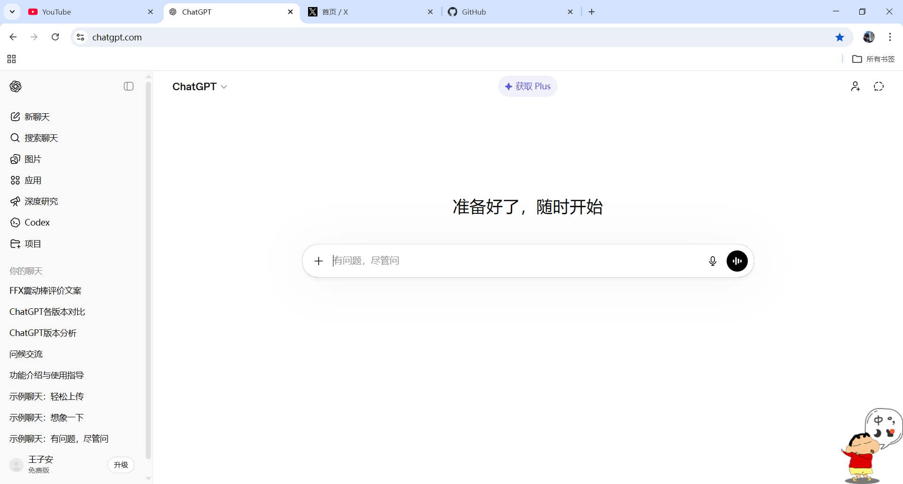
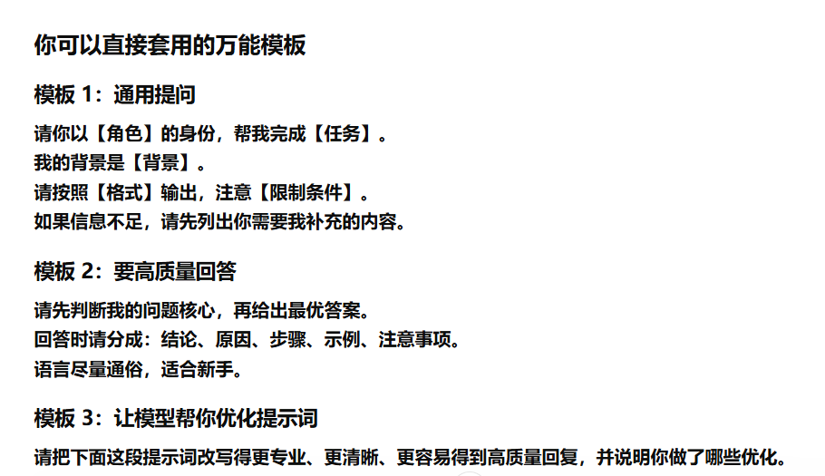

教学任务
搭建好自己的梯子，登录国外自己感兴趣的所有网站，并在手机端也下载好
我学到了什么
学到了如何真正的科学上网，并且知道了机场是什么意思，还知道了我们想访问国外的网站是很不容易的
我的复盘
以前我对科学上网并没有很强的概念，我会觉得特别麻烦，完全没有思路去弄，可是当我静下心来去做的时候发现并没有这么难，有一个在国外的“身份证”真的很重要
成果展示

Study Review
这一页记录了我从AI小白，慢慢进入AI这个世界的几个关键学习节点。 我希望把每次学习都整理成清晰、可回顾、可展示的案例。
搭建好自己的梯子，登录国外自己感兴趣的所有网站，并在手机端也下载好
学到了如何真正的科学上网，并且知道了机场是什么意思，还知道了我们想访问国外的网站是很不容易的
以前我对科学上网并没有很强的概念，我会觉得特别麻烦，完全没有思路去弄，可是当我静下心来去做的时候发现并没有这么难，有一个在国外的“身份证”真的很重要

观看各类AI博主视频，自己先尝试学习，尝试找到一个可以有大量提示词案例的网站
我知道了现在国内外主流AI都是什么，如何写提示词才能更好地让AI帮我完成任务
这一节课让我真正的了解到原来世界上有这么多的AI工具，可我只是注册了我感兴趣 的网站，我觉得那些才是真正以后能帮助到我的工具

借助 AI 生成自己想要的图片和视频，并在浏览器中成功运行整个项目。
我体验到了 AI 在图片生成、页面搭建和内容整理上的辅助能力，也学会了如何把生成结果放入项目里并检查效果是否正常。
当页面真的在浏览器里成功打开时，我对“自己也能做项目”这件事更有信心了，AI 不只是帮我省时间，更让我更敢开始、更敢尝试。